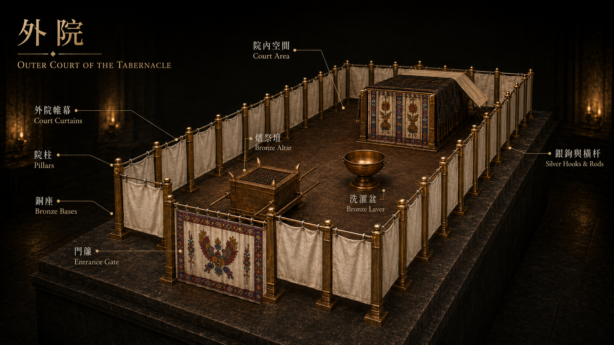

外院與長明燈油
The Courtyard & Oil for the Lamp
互動圖典 · 平面圖
Specimen · Plan ViewHover any numbered hot-spot to reveal bilingual details and scripture references.
圖像參考 · Reference Plate
Plate VI
The Courtyard · 外院
長明燈油 · Oil for the Lamp
Exodus 27:20–21晚到早的燈光
上主吩咐：要用搗成的清橄欖油作燈油，使燈火常常點著。 亞倫和他的子孫每晚要在會幕中、法櫃前的幔子外，料理這燈，從晚上到早晨。 「搗成」意味著經過壓榨 —— 真正的光來自願意被壓榨的橄欖。
From Evening Till Morning
Pure pressed olive oil — beaten, not chemically extracted — supplied the seven lamps. Aaron tended them each evening before the curtain shielding the Ark, keeping them burning from dusk until dawn. The light comes from olives willing to be crushed.
經文 · Scripture
出埃及記 27:9–21 (全 13 節)中文 · 和合本
9「你要做帳幕的院子。院子的南面要用撚的細麻做帷子，長一百肘。 10帷子的柱子要二十根，帶卯的銅座二十個。柱子上的鉤子和杆子都要用銀子做。 11北面也當有帷子，長一百肘，帷子的柱子二十根，帶卯的銅座二十個。柱子上的鉤子和杆子都要用銀子做。 12院子的西面當有帷子，寬五十肘，帷子的柱子十根，帶卯的座十個。 13院子的東面要寬五十肘。 14門這邊的帷子要十五肘，帷子的柱子三根，帶卯的座三個。 15門那邊的帷子也要十五肘，帷子的柱子三根，帶卯的座三個。
16院子的門當有簾子，長二十肘，要拿藍色、紫色、朱紅色線，和撚的細麻，用繡花的手工織成，柱子四根，帶卯的座四個。 17院子四圍一切的柱子都要用銀杆連絡，柱子上的鉤子要用銀做，帶卯的座要用銅做。 18院子要長一百肘，寬五十肘，高五肘，帷子要用撚的細麻做，帶卯的座要用銅做。 19帳幕各樣用處的器具，並帳幕一切的橛子，和院子裡一切的橛子，都要用銅做。
20你要吩咐以色列人，把那為點燈搗成的清橄欖油拿來給你，使燈常常點著。 21在會幕中法櫃前的幔外，亞倫和他的兒子，從晚上到早晨，要在耶和華面前經理這燈。這要作以色列人世世代代永遠的定例。」
English · NIV
9"Make a courtyard for the tabernacle. The south side shall be a hundred cubits long and is to have curtains of finely twisted linen, 10with twenty posts and twenty bronze bases and with silver hooks and bands on the posts. 11The north side shall also be a hundred cubits long and is to have curtains, with twenty posts and twenty bronze bases and with silver hooks and bands on the posts. 12The west end of the courtyard shall be fifty cubits wide and have curtains, with ten posts and ten bases. 13On the east end, toward the sunrise, the courtyard shall also be fifty cubits wide. 14Curtains fifteen cubits long are to be on one side of the entrance, with three posts and three bases, 15and curtains fifteen cubits long are to be on the other side, with three posts and three bases.
16For the entrance to the courtyard, provide a curtain twenty cubits long, of blue, purple and scarlet yarn and finely twisted linen—the work of an embroiderer—with four posts and four bases. 17All the posts around the courtyard are to have silver bands and hooks, and bronze bases. 18The courtyard shall be a hundred cubits long and fifty cubits wide, with curtains of finely twisted linen five cubits high, and with bronze bases. 19All the other articles used in the service of the tabernacle, whatever their function, including all the tent pegs for it and those for the courtyard, are to be of bronze.
20Command the Israelites to bring you clear oil of pressed olives for the light so that the lamps may be kept burning. 21In the tent of meeting, outside the curtain that shields the ark of the covenant law, Aaron and his sons are to keep the lamps burning before the Lord from evening till morning. This is to be a lasting ordinance among the Israelites for the generations to come."